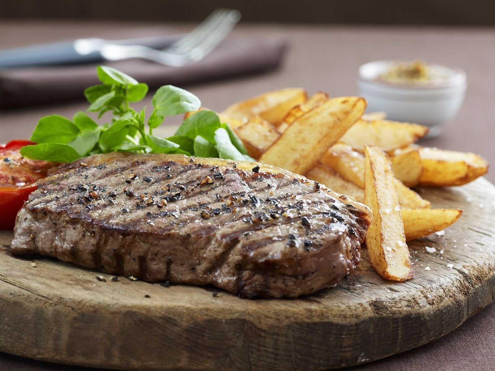
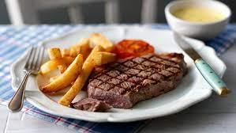
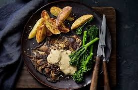

delicious steak and chips



Prep:20 mins
Cook:30 mins
Serves 2
Ingredients
Directions
-
First make the butter: mash all the ingredients together with lots of cracked black pepper. Pat the butter flat between cling film (it’ll chill quicker when thinner) and put in the fridge or freezer to harden.
- Cut the potatoes into neat chips, rinse under hot water, then dry on a tea towel. Place the chips in a deep saucepan (they should only come up a third of the way) and just cover with cold oil. Place the pan on a medium heat, bring the oil to a simmer and give the chips a stir with a wooden spoon. Increase the heat so the oil bubbles really quickly and fry the chips, stirring occasionally so they don’t stick, until crisp and golden – the whole process will take 15-20 mins. When they are done, scoop out with a slotted spoon onto a plate lined with kitchen paper and set aside.
- Meanwhile, heat the griddle pan until smoking hot. Season the steaks with salt and pepper and rub with a little oil – how you cook your steak will depend on the cut you have chosen and its thickness. For a steak that’s 2cm thick, cook it for 2 mins on each side for rare, adding 1 min more for every increasing degree of doneness. Just before lifting the steaks off the griddle, place half the butter on top of each. Serve the steaks with the chips, some mixed leaves and a tangy dressing.
.png)